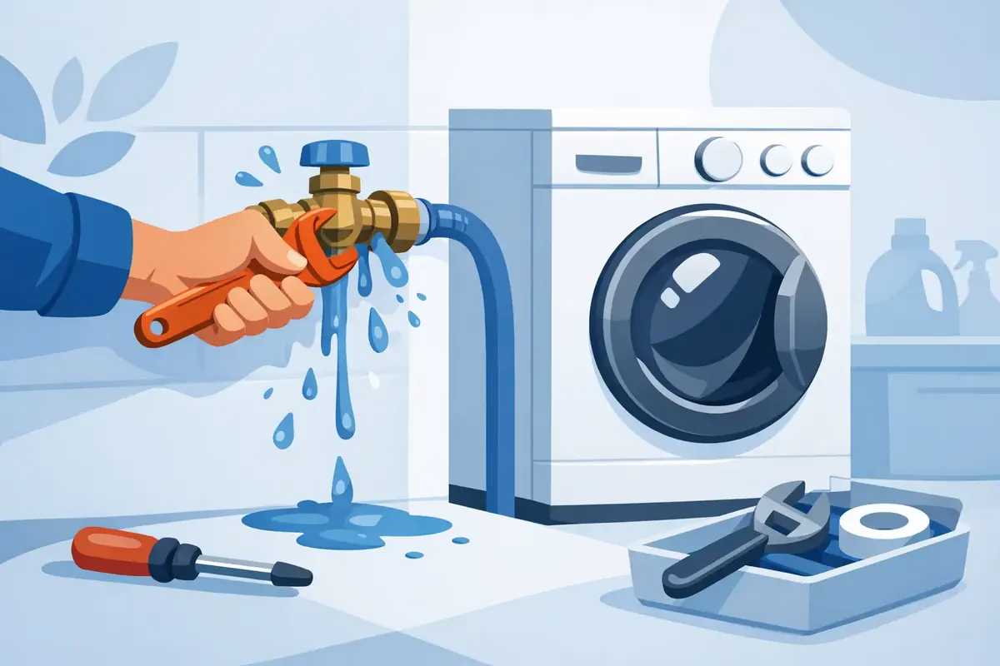

A puddle behind the washer is easy to dismiss until it reaches the wall, warps the laundry-room floor, or seeps into the room below. A washing machine water valve leak deserves prompt attention because the supply valves are connected to pressurized water all day, even when the appliance is not running. Acting quickly can protect your home, your belongings, and your peace of mind.
Start by Shutting Off the Water Safely
If water is actively dripping or spraying, turn both washing-machine supply valves clockwise until they stop. These are usually located in a recessed box or on the wall directly behind the washer. Avoid forcing a valve that feels stuck, as an older valve can break or begin leaking more heavily at the stem.
Next, unplug the washing machine if water is near the electrical cord or outlet. Move towels, baskets, and anything that can be damaged away from the wet area. If the leak continues after closing the washer valves, turn off the home's main water supply and call a plumber for help.
When the immediate problem is under control, dry the area as thoroughly as possible. Water can travel under vinyl, laminate, baseboards, and drywall before the visible puddle tells the full story. A small leak caught early is usually a straightforward repair. One left alone can create a much larger restoration project.
Where Is the Washing Machine Water Valve Leak Coming From?
The location of the moisture is the best clue. Do not assume every leak behind a washing machine comes from the valve itself. The hoses, drain line, appliance connections, and plumbing in the wall can all be responsible.
Leaking from the valve handle or stem
Water around the handle often points to a worn packing washer, O-ring, or internal valve component. This type of leak may only appear when the valve is open. In some cases, gently tightening the packing nut behind the handle by a small amount can slow the drip, but overtightening can make the problem worse or prevent the handle from turning properly.
A valve that leaks from the stem is often nearing the end of its useful life, particularly if it is an older multi-turn style. Rebuilding can be possible, but replacement is frequently the more dependable choice.
Leaking at the hose connection
If water is collecting where the braided supply hose screws onto the valve, first make sure the connection is hand-tight and then snugged carefully. Do not use excessive force. The rubber washer inside the hose fitting creates the seal, not the threads themselves.
A flattened, cracked, missing, or poorly seated hose washer can cause a steady drip. Replacing the washer may solve the issue, but aging or bulging hoses should be replaced rather than patched. Washing-machine hoses work under constant pressure and can fail without much warning.
Leaking from the valve body or wall box
Water coming from the valve body, the pipe entering the valve, or inside a recessed laundry box calls for professional attention. Corrosion, a failed soldered joint, loose fitting, freeze damage, or a cracked valve can allow water into the wall cavity.
This is not a place for a temporary wrap of tape. The visible drip may be only part of the problem, especially if the wall feels soft, paint is bubbling, or there is a musty odor nearby.
Water appears only while the washer runs
When the leak happens during a fill cycle, inspect the hose connections at both ends. Also consider whether the washer is vibrating enough to shift hoses or stress fittings. If the water is coming from the drain hose or standpipe rather than a supply valve, the issue may be a drain backup, a loose drain connection, or an improperly positioned hose.
Why Washer Shutoff Valves Fail
Laundry-room valves get less use than kitchen or bathroom fixtures. Many homeowners turn them on once when the washer is installed and do not touch them again for years. Mineral buildup, corrosion, and worn internal seals can make a valve hard to operate or unable to close completely.
Middle Tennessee water conditions can contribute to mineral accumulation over time, especially in older plumbing systems. A valve may look fine from the outside but fail when someone finally turns it during a repair or emergency. That is why a valve that is stiff, corroded, or damp should be evaluated before it becomes urgent.
Age matters, but installation quality matters too. Valves that were overtightened, connected to deteriorating pipes, or installed in a cramped box can be more likely to leak. A qualified plumber can identify whether the problem is limited to the valve or whether the supply piping also needs attention.
Can You Repair It Yourself?
A homeowner can often handle simple tasks such as replacing a hose washer or installing new washing-machine hoses with the proper fittings. This is reasonable only when the shutoff valves close fully, the connections are accessible, and there is no sign of corrosion or damage inside the wall.
Replacing the actual water valve is different. The repair may require shutting off the main water supply, draining lines, removing the old valve, and making a secure connection to copper, PEX, or another type of supply pipe. If a connection fails, the result can be a significant leak as soon as the water is restored.
It depends on the condition of the plumbing and the homeowner's experience. A quick repair can be tempting, but a professional replacement offers more confidence when the valve serves a major appliance and is hidden behind it most of the time.
What a Professional Valve Repair Should Include
A plumber should do more than swap a handle and leave. The service should begin with locating the true source of the leak and checking the condition of the hoses, fittings, supply lines, and nearby wall area. If the valve needs replacement, the plumber can recommend a durable, easy-to-operate shutoff option that suits the existing plumbing.
After the repair, the connections should be tested under pressure and while the washing machine fills. This step matters because some leaks only show up when hoses move, water pressure changes, or the washer cycles on and off.
For homeowners who want added protection, smart water shutoff equipment may also be worth discussing. These systems can monitor water use and, depending on the setup, help alert you to unusual flow or shut off water when a major leak is detected. They are not a substitute for sound plumbing repairs, but they can add another layer of protection for busy households, rental properties, and homes that sit empty during travel.
Prevent the Next Laundry-Room Leak
A few habits can reduce the chance of a surprise failure. Check behind the washing machine periodically for dampness, rust, hose bulges, and staining on the wall or floor. Replace aging rubber hoses with quality braided hoses, especially if their age is unknown. Keep the washer from walking across the floor during spin cycles, since vibration can stress both water and drain connections.
It is also wise to make sure every responsible adult in the home knows where the washer valves and main water shutoff are located. In an emergency, minutes matter. If you plan to be away for an extended trip, consider shutting off the washing-machine valves after confirming they operate properly.
Avoid turning old valves aggressively just to test them. A stiff valve can begin leaking when disturbed. During a plumbing inspection or maintenance visit, a professional can check these valves carefully and address concerns before they become a flooded laundry room.
When to Call for Immediate Help
Call a plumber promptly if the valve will not shut off, the leak is coming from inside the wall or valve box, water has reached an outlet, or you see signs of floor or drywall damage. The same applies when a hose has burst or a connection is spraying. Shut off the main water supply if needed, then get help rather than risking additional damage.
For homeowners and property managers across Middle Tennessee, Angle Stop Plumbing provides respectful, family-friendly plumbing service backed by experienced workmanship, upfront pricing, and a No Hassle Guarantee. A leaking washer valve may be a small repair today, but taking care of it now helps keep laundry day from turning into a water-damage emergency.